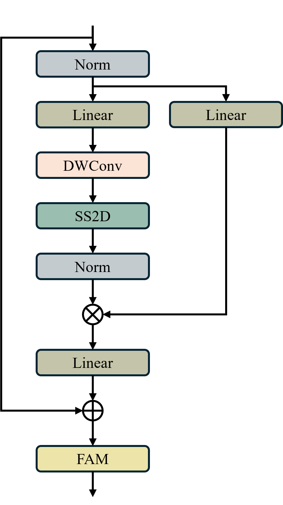

Frequency-aware selective scan


A depthwise convolution extracts local texture before the two-dimensional selective scan (SS2D) mixes information across the image. A parallel projection gates the scan features before they reach the frequency-aware module.